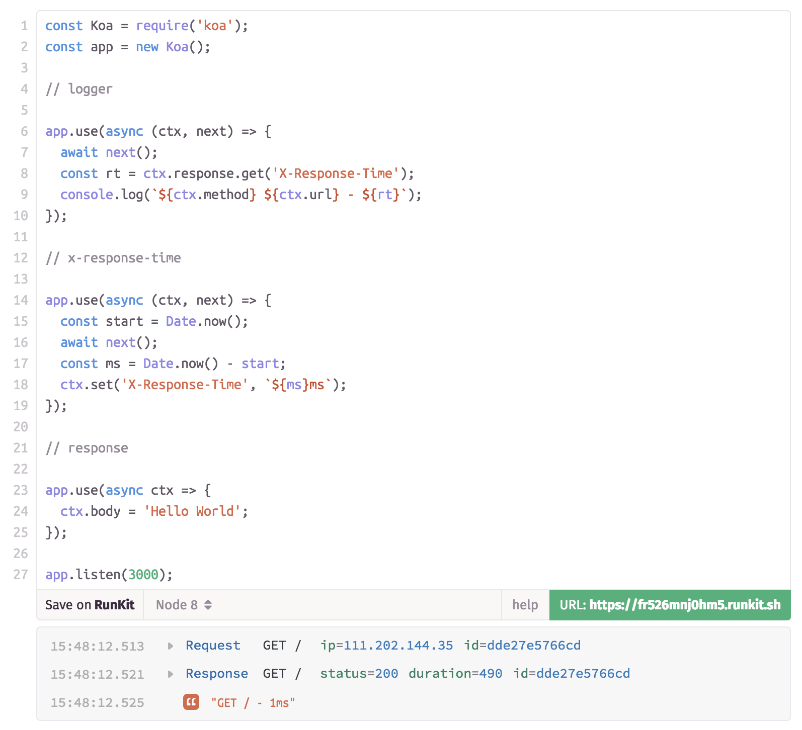

今日的 web 和几年前的 web 已经演变了很多，多变而又复杂。从过去传统局限在前后一体，逐渐进化到今天技术繁多，一直延伸到 webapp，SSR 甚至发展到客户端。
555555555555555555666666666666666666666666666
蛮荒时代
早在几年我刚入行的时候，jQuery 风头正盛 —— “你可以不会 JavaScript，但你必须要会 jQuery”。那个时候 AMD 和 CMD 模块规范在社区里摩擦着火花。那时候没有 web 前后端分离的概念，前端的代码依附在后端项目中。
.
├── release
├── src # 后端相关
│ ├── main
│ ├── java
│ │ ├── com
│ ├── resources
├── bin
├── WebRoot # 前端相关
│ ├── css
│ ├── images
│ ├── js
│ ├── META-INF
│ ├── WEB-INF
│ │ ├── lib
│ └── index.jsp过去项目里前端资源依附下后端项目下，这么设计是因为当初前端远没有今天这么复杂，属于项目中的一小部分，所以依附下传统业务项目上。当时在大型 web 架构中（前后端），微服务、模块分离、业务分离的概念还没有今天这般清晰。
另外就是那时候的大部分都是后端工程师也包揽了前端的事情，所以放在传统后端项目中理所当然。web 前端工程师也只是近几年才有的岗位。
如此带来的劣势也很明显，就是前端很依赖后端项目，在今天看来，让一个前端选手打开后端项目，并且从头到尾撸一遍逻辑。尤其再配合后端 web 框架情侣搭配的 JSP/Razor/ASP .NET 服务端渲染，酸爽的气息扑面而来。
这些前后端混在一起的状态十分痛苦，整个社区迫切需要一种解决方案，而 Nodejs 的兴起，使得这些无处安放的解决方案有了一个最佳平台。
社区的演变
Node 横空出世，带来了属于 web 前端的生态圈的朝阳。它主要带来了两个革命性的东西：
- npm 包管理
- 一个脱离了浏览器的运行环境
npm
当 Brendan Eich 仅花了 10 天开发 JavaScript 的时候，并没有考虑到它会发展到今天这样壮大 —— JavaScript 缺少良好的包管理方案。
nodejs 带来了 npm 包管理，那些无处安放的工具类库终于有了一个平台，大家纷纷将自己封装的工具、库放到 npm
上，然后其他人也可以引入这个包，生态由此建立。而因为 npm 的设计缺陷加上社区的活跃。
当然，npm 上包的质量和数量逐渐形成一种新的历史包袱，例如 2016 年在 npm 上发生的 left-pad 事件 也给了 npm 社区一个新的警示。
在现代 web 应用中，应该根据项目的需要，优先利用起 npm 作为包管理方案，结合优秀的模块管理方案，抛弃过去 引入 <script />
引入包的方式。
百花齐放的编译工具
随着 Nodejs 的到来，Nodejs 是基于 Chrome V8 引擎打造的一个 JavaScript 运行环境，可以让 js 不再局限于浏览器中。
而 JavaScript 的规范 ECMAScript 也配合时代的发展迎来快速更新。我们有了新的需求：
- 更新的语言规范编写的代码，需要运行在各种老旧的浏览器上（通过
babel等） - 增强现有技术的新技术（例如
React JSX/TypeScript）
于是前端也走上了其他大型语言的老路 —— 编译。
正是 Nodejs 提供了强大平台的，让编译工具开始百花齐放，webpack、rollup、parceljs、gulp、grunt 等编译工具逐渐流行，“配置工程师” 这个耐人寻味的名词逐渐活跃在前端圈。
真怀念过去写个 js 然后 <script /> 引入的简单日子...
node web server
Nodejs 拔高整个行业的水平是无疑的，随着 Nodejs 的热门，以 Nodejs 为后端的主力军逐渐开始出现，“nodejs 工程师” 的字眼也开始出现在岗位招聘当中。Nodejs 可以是编译工具的平台，也可以是 node web server —— 一个完善的后端服务。
以 express 和 koa 为核心的 web server，配合数据库的操作，让前端产生了更多的想象力。

Nodejs web server 的出现让前端的技术范围延伸到了后端，从 client 一路 “编写 JavaScript” 到 server。
在现代 web 前端架构中，Nodejs 扮演着重要的角色，它可以在编译阶段为编译工具提供平台，在此之上继而编写自己的自动化工具。也可以在前后端分离的场景中，建立一个中间服务，编写前后端的胶水。
更可以独立成为 web server，连接整个前后端。
electron
前端社区的壮大充满了想象力，有耀眼的巨星 React-Native 试着将 web 的技术融入到移动端 native，也有部分人将 web
前端的技术延伸到了传统的桌面端 —— Electron 由此而生。
Electron 基于 Chromium 和 Node.js, 让你可以使用 HTML, CSS 和 JavaScript 构建桌面应用程序。

如果你可以建一个网站，你就可以建一个桌面应用程序。 Electron 是一个使用 JavaScript, HTML 和 CSS 等 Web 技术创建原生程序的框架，它负责比较难搞的部分，你只需把精力放在你的应用的核心上即可。
Electron 具有跨平台的特性，和 Web 相关技术融合，以及简单精致的 API 设计。

Any application that can be written in JavaScript, willeventually be written in JavaScript. 任何可以使用 JavaScript 编写的程序，最终都会使用 JavaScript 编写 —— Jeff Atwood
解决方案
前面讲解了很多关于 web 前端的历史，是希望所有人都可以意识到，前端发展到了今天，已经不是简单 HTML/css/js 就可以概括的东西，它的应用场景也越来越丰富，项目复杂程序今非昔比，而如何保证一个长期可维护的项目本身就需要一些思考加以提炼精华。
理想的解决方案，首当其冲，应该有一套迎合当前环境的架构方案。
架构是一套将现有技术归并，并打出组合拳，融入了设计思想，也以一套规范形成整个项目风格的骨架。
架构的是规范的基础，也是规范的壁垒，同样它也是规范的最后一道防线。
在架构一个项目的时候，应该考虑优先以下几个特性：可维护性，可扩展性，规范化约束和风格。
顺便我们可以提一下现在前端圈的脚手架。脚手架脚手架模板本质上也是架构，一种通用，结合了最佳实践的架构。
脚手架致力于最佳实践，并留出足够的可扩展性，以便基于业务型架构，延伸出迎合业务的最佳实践。
当然，解决方案包含了架构、设计思想、编码规范、工程化和基础工具设施等，甚至与部署方式都有关的。架构只是其中相对比较重要的一个环节而已。
在良好的解决方案中，应该包含几个关键点：
可维护性
优先保证可维护性，这是我们追求良好解决方案的核心。不能项目完成后，在业务没有大幅度调动的情况下，项目支撑不到半年就变的难以维护或不可维护，随着时间推进技术债会积累的越来越深。
从立项开始，目录结构，文件名，甚至构建方式都影响着后续的项目可维护性，所以在项目立项之初的每一步都必须经过深思熟虑。
例如下面的目录结构就没有考虑到 components 和 module 的区别，数据如何流向，逻辑放哪里等问题。
src
├── app
│ ├── main.js
├── assets
│ ├── config
│ ├── fonts
│ ├── imgs
│ ├── libs
│ └── tools
├── components
│ ├── common
│ └── partial
└── index.html项目可维护性是一个值得严阵以待的问题。
可扩展性
在项目架构方面，需要具有可扩展性。在真实的业务场景中，被产品方向、产品需求、技术氛围、公司工具等环境影响的因素非常多，保持架构的可扩展性同样非常重要。
但是每次扩展不应该是随便找个地方写个目录就可以了，久而久之会因为被随意扩展，再次导致项目可维护性越来越低，所以可扩展性是相对的，在现有的架构上可以平滑、可控的扩展，而不应该被随意扩展。
很多项目就有这种情况，刚开始的目录规范定的很好，随着需求的变多随意扩展目录，越到后来目录越来越多，每个目录都概念模糊。
对于这个问题的解决，个人崇尚的方案是 code review，约定和规范永远没有良好的 code review 来的粗暴且有效。同样 code review 能够在及时发现问题，在可控的时间内把控好整个项目的规范和约束。
其次，可扩展考虑不仅仅只是目录，代码、业务、甚至服务器集群，都要保留可扩展性。
在代码层面，需要保留统一的入口和出口处理。
- 统一管理的 HTTP 请求方法，统一的 HTTP 结果处理
- 统一管理的逻辑层入口
- 统一管理的数据流向
- 统一管理的状态管理（例如用户状态机）
- 统一管理的 BaseComponents/BasePage
- 统一管理的 BaseModel
做这些统一为了为了后续可以在统一的入口处做扩展，例如 HTTP 所有请求都要加一个参数贯穿全局的参数，HTTP 请求结果都需要新增一个相同的特殊判断等。
合理的服务规划
在团队中，迎合业务需求的项目，需要有明确的服务资源规划。
是依赖现有服务资源的，例如资源是放到自己的服务器，还是托管到 CDN 上，代码在基于公司还是其他第三方构建平台，服务是否部署 Nodejs，部署是和后端服务在一起还是分离？
这些问题都会影响着项目如何进行自动工程化，如何部署等代码之外的，这在项目架构中也应该合理的调度结合项目现有资源。
例如我们会自行编写一些脚本，自动启动测试服务，上线之前编译的时候，连接公司的编译平台，然后再通过公司的线上平台上 docker，上线过程中自动将资源上传到 CDN。
这一整套的工程都应该是在项目架构中解决，而不能把问题抛给开发人员，尽可能的让开发人员能够快速沉浸写码即可。
同时要需要确定项目兼容性，列出项目兼容列表。尤其是移动端，可以列出市面上 Top 10 的移动设备作为基本兼容面，在后续统计产品访问量的时候更新兼容设备列表。
规范化约束和风格
根据团队风格确定整个项目的编码风格，使用 eslint 或 tslint 确定编码风格，开发中强制开启编译检查。
在这里，我个人仍然觉得，任何的代码风格和约束，都比不上 code review。在团队风格搭建初期，尤其 code review 至关重要。
合理的通用性
这里的之所以用 "合理" 来表述，是用来反驳一昧追求通用性的设计。从一开始的设计中强行抽离业务、抽离环境，自己造轮子，过分追求通用性，对项目的危害更大。
通用性应该是在真实实践过后，根据遇到的场景逐渐抽离出来的通用性，而不是一开始就刻意设计会通用，阻碍业务之后，死板着一个理念 “不行我不能掺和业务，这设计一定得通用”，从而起到反面效果。
分层
除了根据功能分层之外，在业务逻辑上也需要有合理的分层规划，前端并不应该仅仅只是简单的拿到数据做展现，要针对不同的业务场景，在搭建项目初期就针对业务做逻辑分层，并保留业务层的逻辑。
推荐的分层逻辑：
- 逻辑分层 - 按照业务逻辑进行分层切割
- UI 分层 - 按照页面的数据展现，聚合和切割 UI，包括 UI 数据的分层
- 服务分层 - 服务分层包含了对数据和接口的服务分层整理
数据流
前端的本质是操作数据，数据输入到服务器，输出到页面中，是一个数据流转的过程。数据是通过单向数据流(flux)，还是双向数据绑定。
这里不应该过分追求某一数据流向的形式，而是针对业务场景，在合适的场景，做合适的事情。
可配置
无论是业务逻辑还是业务运营位，项目的细节（例如服务端口），做到适度可配置化，从而让项目的可重用性更高。
组件和模块
这是一个老生常谈的问题，复杂的业务必然有自己的业务模型和 UI 模型，对应衍生出组件（Component）和模块（Module）的概念：
- 组件 - 强调复用，核心关注 UI
- 模块 - 强调职责，它是一个业务行为的打包
渐进式优化
和上面提到的 “反驳一昧追求通用性的设计” 相似，任何架构和设计，都不是在起初都尽善尽美。我们应该在项目需求渐进中，逐步优化现有解决方案。
尤其需要注意的是，尽可能避免重复造轮子，先做分内事，再横向扩展。虽然前端er 们都是一群皂动不安的人群，但在业务之中应该理清先后顺序，不能一昧追求自己技术的快感从而影响了业务稳定的本质。
在这里个人推崇的思想是：先做好架构，再做完整的解决方案。
自动化
自动化可以很好的解放生产力，我们应该学会偷懒，为了让自己偷懒而做好自动化。任何繁琐的手动操作都应该去尝试自动化，在这一领域就需要自己丰富的横向知识面，这里自动化尤其关注这几点：
- 一键打包
- 一键启动开发环境
- 一键部署测试环境
- 一键部署生产环境
- 一键上传部署资源
当然这应该是一个现代优秀解决方案的基本面，在实际的应用场景中，应该结合公司，或者开源社区的各种持续集成平台，汇聚各大工具的优势而简化我们后续部署等重复而又繁琐的工作。
明确的指标
所有的工作应该是可以被量化的，优化了什么环节，必然会来优化的成果，从一开始就应该对成果有一个量化的指标，例如：
- 页面加载时间 <= 1.2s
- code review >= 80%
- typescript 类型补充 >= 90%
- 包大小 <= 1mb
- 部署时间 <= 10ms
- 组件和模块数量
- 重复代码在 <= 20 份（或 100 行）
- http 请求数 <= 40
- store 数据仓储 <= 20
还有很多可量化指标，这些可量化指标用于最终验收成果，或者在不断的 code review 中精进代码和团队风格有着决定性的作用。
当然，还有 KPI....
结语
这篇文章主要给大家讲解了 JavaScript 历史的演变，和社区对于优秀解决方案的探索，并且指出了一些设计思路。
《Web 前端解决方案指南》在一个系列文章，在后续的文章中我们会逐渐探索现代 Web 应用中的一些常见的 Web 前端架构形式和对应的解决方案，分别包括 Webapp、分片 Web、前端服务（Webapp + node）、electron 等。欢迎关注我的博客 。
66666666666666666666666666666666666666666666